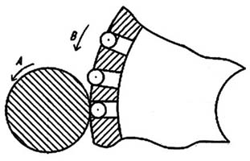

Нагартовка технологический процесс упрочнения, происходящий в результате пластической деформации при холодной обработке давлением см. рисунок 1. В результате данного процесса изменяются механические свойства металлов: повышаются прочность и твердость материала, увеличивается предел текучести, однако снижается пластичность.

a
б
в
Рис. 1. Изменение структуры в металле под действием пластической деформации:
а) структура металла после деформации (волокнистая);
б) пограничная структура металла (переход от зернистой к волокнистой);
в) структура металла до деформации (зернистая).
Бесспорно, упрочнение металлов очень важно, так как большинство узлов машин и механизмов работают в неблагоприятных условиях, способствующих возникновению разных дефектов, и одним из способов добиться износоустойчивости является нагартовка металла.
Ошибочно понятия «нагартовка» и «наклёп» считают синонимами, так как между этими терминами есть одно существенное отличие.
Нагартовка представляет собой целенаправленный процесс, который делают специально с расчётом на значительное улучшение прочностных характеристик металла.
Наклёп, в отличие от нагартовки, часто является самопроизвольным процессом и может носить как положительный, так и отрицательный характер. Детали с нежелательным наклёпом (рис. 2) подлежат дальнейшей термической обработке. Общеизвестно, что чем выше температура металла, тем ниже его способность к нагартовке.

Рис. 2. Нежелательный наклёп на телах вращения
Для избавления от нежелательной наклёпки металл подлежит нагреву, и в результате рекристаллизации восстанавливается недеформированная структура зерен (рис. 3).
a
б
в
г
Рис. 3. Процесс нагартовки, возврата и рекристаллизации:
а) нагартовано, зерна вытянуты в результате пластической деформации, состояние твердое;
б) возврат, дислокации формируют ячеистую сеть, состояние еще твердое;
в) начало рекристаллизации, новые недеформированные зерна, состояние начала снижения твердости;
г) рекристаллизация, однородный размер зерна, состояние мягкое
Методы получения нагартовки металла
Получение нагартовки с помощью специальных операций происходит под воздействием внешних сил.
Различают два основных типа наклёпа, которые отличаются процессами, протекающими при его формировании в материале: фазовый и деформационный.
При фазовом наклёпе источником деформаций служат фазовые превращения, в результате которых образуются новые фазы с отличным от исходной (-ых) удельными объёмами.
Деформационный наклёп, в свою очередь, может быть центробежно-шариковым или дробеметным.
Существует два распространённых метода образования нагартовки:
1. Дробеструйный способ
Образование наклёпа в дробеструйном аппарате происходит за счет силы воздействия на обрабатываемую поверхность распылителем, разбрасывающим с большой скоростью частицы различного геометрического размера и формы (Ø0,3-2,5 мм) преимущественно из - стали, чугуна и керамики, которые совершают бомбардировочное движение по внутренней камере аппарата со скоростью до 80 м/с (рис. 4).
Рис. 4. Дробеструйная нарготовка
2. Центробежно-шариковый способ
Вкратце принцип центробежно-шарикового способа выражается в использовании вращающегося кольца с шариками, располагающимися во внутренних гнездах. При вращении кольца шарики под воздействием центробежной силы шарики выпячиваются в крайнее положение и оказывают ударное воздействие на деталь (рис. 5).
Рис. 5. Центробежно-шариковая нагартовка
С увеличением степени деформации характеристики пластичности (относительное удлинение, относительное сужение) и вязкости (ударная вязкость) уменьшаются, а прочностные характеристики (предел упругости, предел текучести, предел прочности) и твердость увеличиваются.
Наклёп
Совокупность явлений, связанных с изменением механических, физических и других свойств металлов в процессе пластической деформации называют деформационным упрочнением или наклёпом.
Наклёп — упрочнение поверхности металлов и сплавов в результате изменения их структуры и фазового состава в процессе пластической деформации, при температуре ниже температуры рекристаллизации. Наклёп сопровождается выходом на поверхность материала дефектов кристаллической решётки (рис. 6 зона «Разрушенная структура»), увеличением прочности и твёрдости и снижением пластичности, ударной вязкости, сопротивления металлов деформации противоположного знака.
Рис. 6. Наклёп
Этапы, в процентном отношении, изменения структуры и свойств металла в процессе деформации наглядно изображены (многократное увеличение) на рисунке 7.
Рис. 7. Изменение структуры-свойств материала (%) в процессе пластической деформации
Среди основных видов металлообработки давлением при температуре ниже температуры рекристаллизации, можно перечислить несколько:
- прокатка;
- ковка;
- волочение;
- штамповка;
- прессование;
- ротационная вытяжка.
Особенно хочется остановиться на самом распространённом виде обработки – это ротационная вытяжка она представляет собой технологический процесс формоизменения металла давлением, используемый для изготовления тонкостенных деталей в форме полых тел вращения. Данный метод можно считать одним из наиболее эффективных способов получения прочных и твердых деталей, так как он имеет максимальную производительность и экономическую эффективность, не требует дополнительной обработки и позволяет получать сложные по конфигурации и глубокие изделия. Детали, полученные данным способом, имеют высокий предел прочности и предел текучести, а также у них возрастают предел выносливости и твердость.
Для того чтобы разобраться в вопросе, почему нагартовка или формирование наклёпа приводят к упрочнению металла, следует проанализировать процессы, протекающие в материале при их поэтапном выполнении. При холодной пластической деформации, происходящей под воздействием нагрузки, величина которой превышает предел текучести металла, в его внутренней структуре возникают напряжения. В результате металл будет деформирован и останется в таком состоянии даже после снятия нагрузки. Предел текучести станет выше, и его значение будет соответствовать величине сформировавшихся в материале напряжений. Чтобы деформировать такой металл повторно, необходимо будет приложить уже значительно большее усилие. Таким образом, металл станет прочнее или, как говорят специалисты, перейдет в нагартованное состояние.
При холодной деформации металла, протекающей в результате воздействия соответствующего давления (в процессе, например, наклёпа), дислокации, составляющие внутреннюю структуру материала, начинают перемещаться. Даже одна пара движущихся дефектных линий, сформировавшихся в кристаллической решетке, способна привести к образованию все новых и новых подобных локаций, что в итоге и повышает предел текучести материала.
Сущность наклёпа и нагартовки
Наклёп металла является одним из способов упрочнения металлического изделия. Происходит это благодаря пластической деформации, которой такое изделие подвергают при температуре, находящейся ниже температуры рекристаллизации. Деформирование в процессе наклёпа приводит к изменению как внутренней структуры, так и фазового состава металла, в следствии чего в кристаллической решетке возникают дефекты, которые выходят на поверхность деформируемого изделия (рис. 6 зона «Разрушенная структура»). Всё вышеперечисленное ведет к изменениям механических характеристик металла, а именно:
- повышается твердость и прочность;
- снижаются пластичность и ударная вязкость;
- ухудшается устойчивость к коррозии.
Состояние наклёпа, если оно относится к ферромагнитным материалам, приводит к тому, что у металла увеличивается коэрцитивная сила*, а его магнитная проницаемость снижается. Если наклёпанная область была сформирована в результате незначительной деформации, то остаточная индукция, которой характеризуется материал, снижается, а если степень деформации увеличить, то значение такого параметра резко возрастает. Из положительных последствий наклёпа следует отметить и то, что с его помощью можно значительно улучшить эксплуатационные характеристики более пластичных металлов, создающих значительное трение в процессе использования. Наклёпанный слой на поверхности металлического изделия может быть сформирован как специально, тогда такой процесс является полезным, так и неумышленно, в таком случае его считают вредным. Чаще всего неумышленное поверхностное упрочнение металлического изделия происходит в процессе обработки резанием, когда на обрабатываемый металл оказывается значительное давление со стороны резца или фрезы.
* Коэрцитивная сила является одной из ведущих характеристик магнитных материалов. По численному значению коэрцитивной силы магнитные материалы делятся на магнитомягкие, имеющие низкую коэрцитивную силу, и магнитотвердые с высокой коэрцитивной силой. Разница между этими группами материалов соответствует значению коэрцитивной силы., равной 4 кА/м. Численное значение коэрцитивной силы определяется факторами, препятствующими перемагничиванию. Эти же факторы являются причиной магнитного гистерезиса. В магнитомягких материалах все эти факторы необходимо свести к минимуму, чтобы облегчить процесс перемагничивания, а в магнитотвердых материалах, наоборот, необходимо в наибольшей степени затруднить процесс перемагничивания. Основной механизм коэрцитивной силы в магнитомягких материалах связан с задержкой смещения доменных границ на дефектах и внутренних напряжениях. Единица измерения коэрцитивной силы в системе СИ — Ампер на метр (А/м), в системе СГС – Эрстед (Э).
Если Вам было интересно, подпишитесь пожалуйста на наши YouTube и Rutube каналы, там Вы найдете множество интересного и познавательного видео контента, не забывайте ставить 👍 и подписываться на нас во всех социальных сетях! Вам всё равно, а мне приятно.
Обращайтесь к нам за любой помощью по учебе, к примеру, это может быть: проектирование, оцифровка и перерисовка любых чертежей, деталировка, инженерная графика и начертательная геометрия, трассировка печатных плат любой сложности, моделирование схем электрических принципиальных, 3D визуализация и моделирование деталей простых и сложных.